MUSIC ANALYTICS
Week 1
Week 2
Week 3
Week 4
Week 5
Week 7
Week 8
Week 9
Week 10
Extracting Meaning from Audio
Task 1: Extracting Features
Below shows the transformations we extracted from Sonic Visualizer for all three songs. The top pane shows the waveform (original) transformation, then decending, the Spectogram, Mel Frquency Cepstral Coefficient (MFCC), and finally the Chromagram.
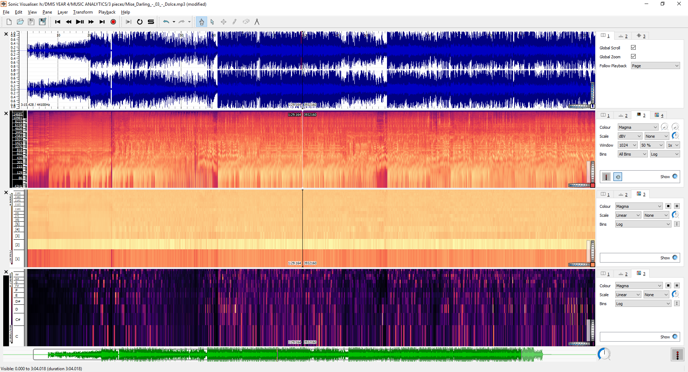
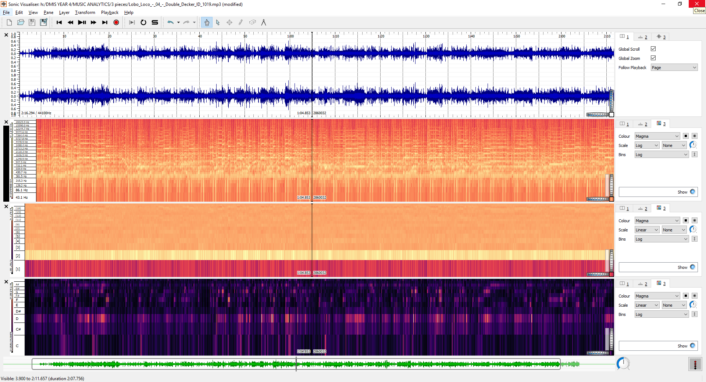
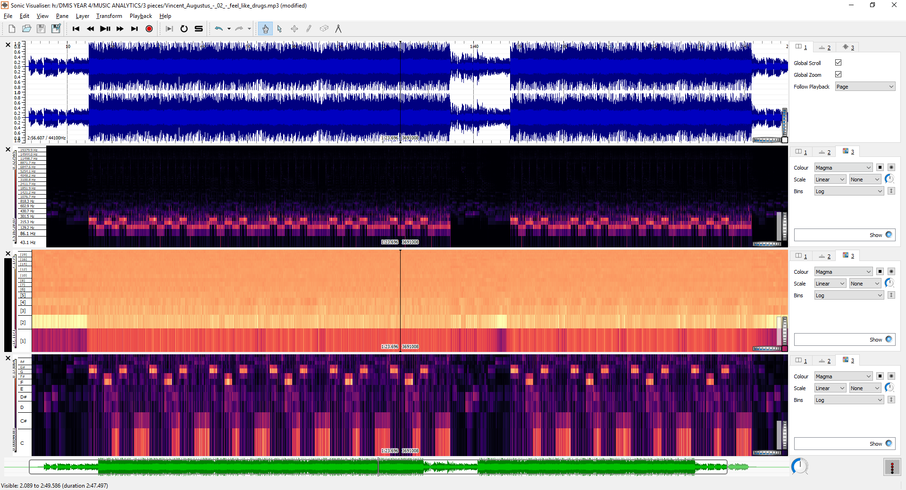
Task 2: Creating Histograms
Dolce by Mise Darling
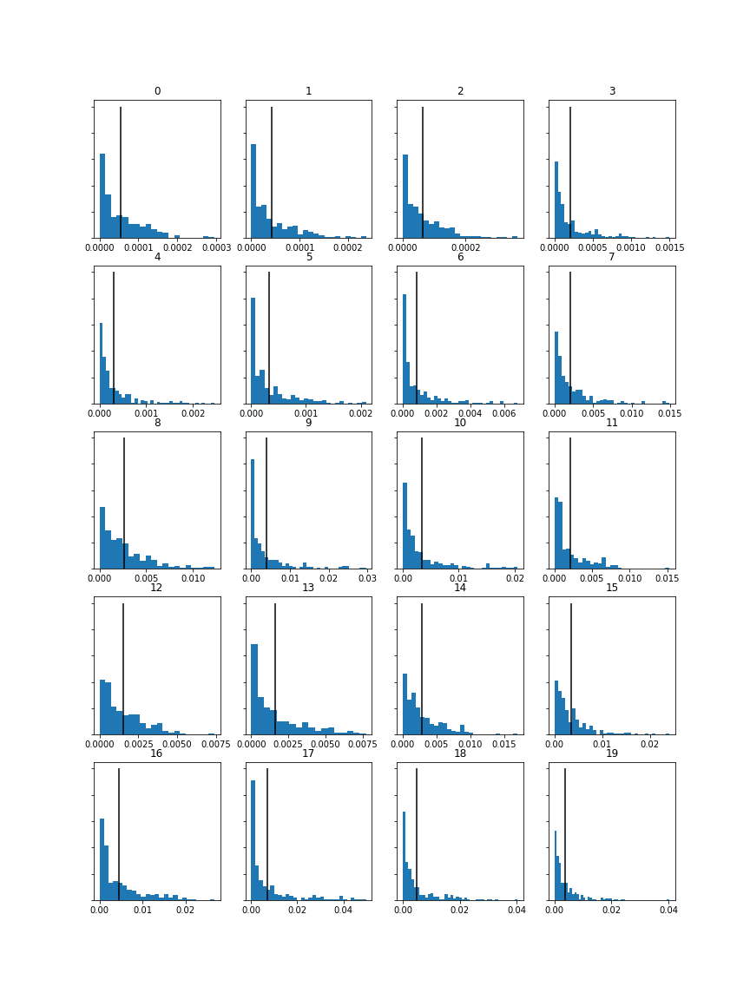 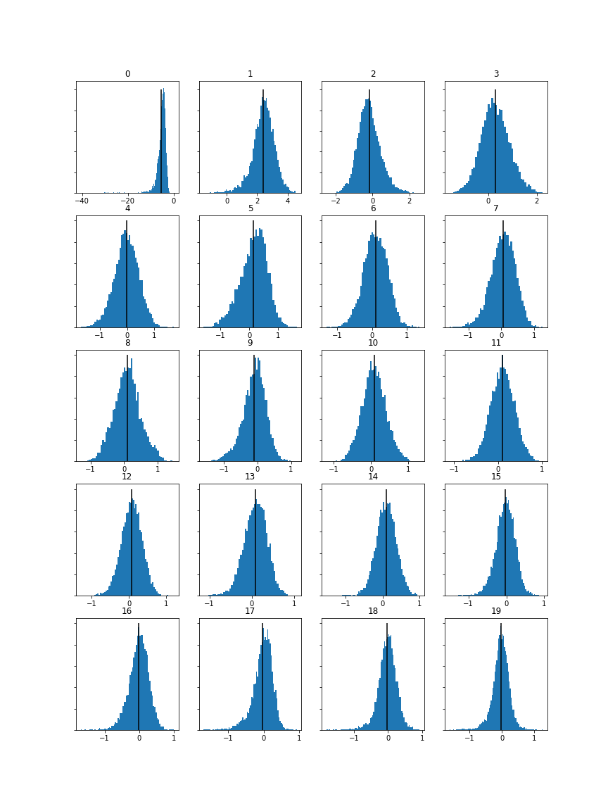 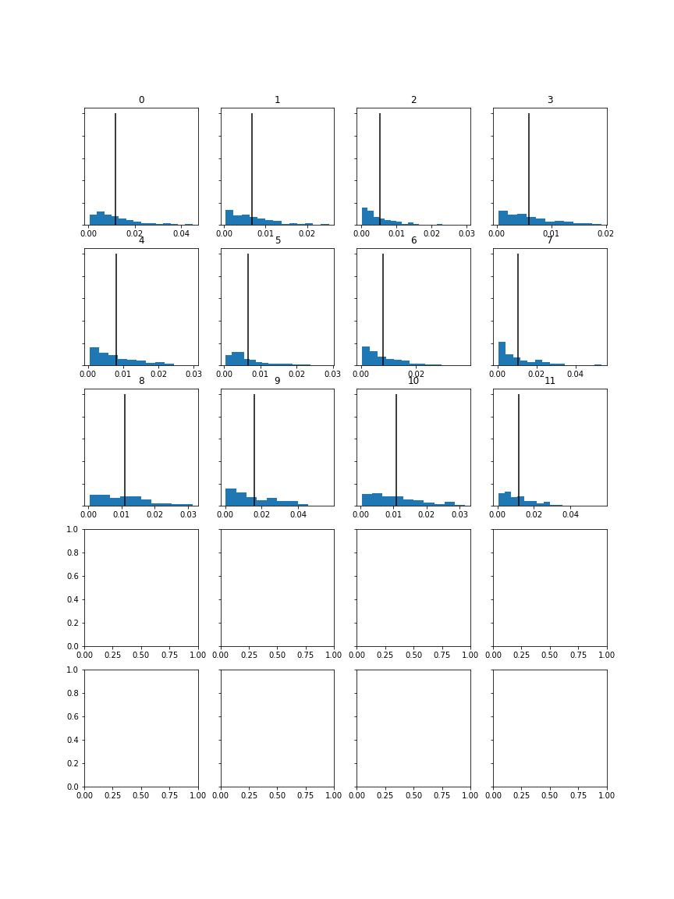
Double Decker by Lobo Loco
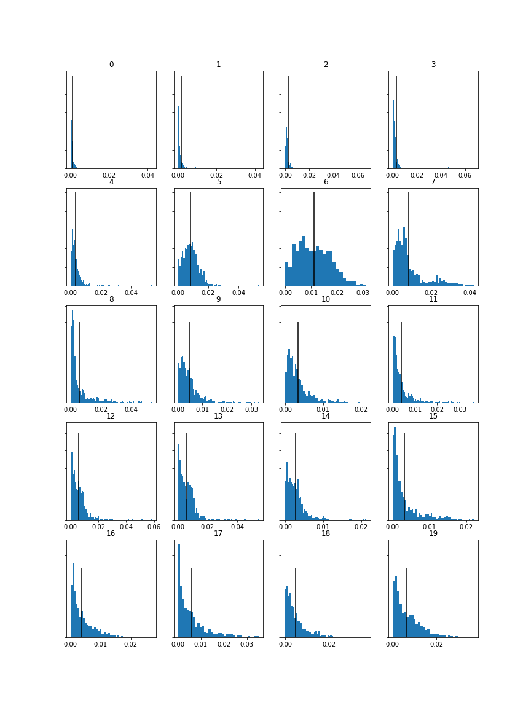 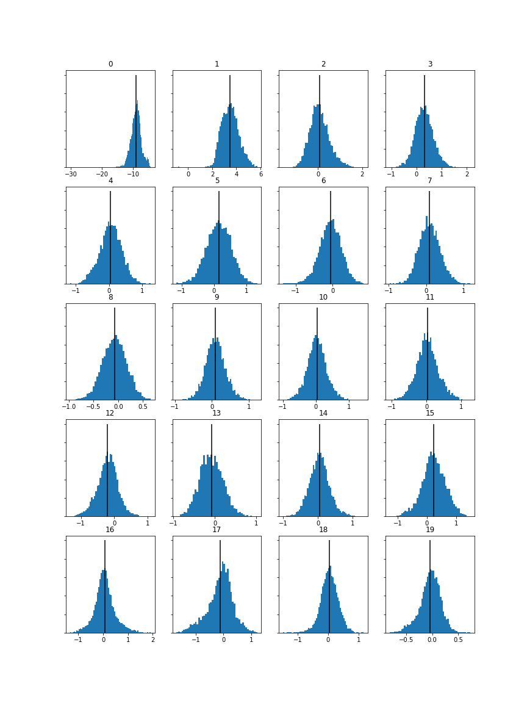
Feel Like Drugs by Vincent Augustus
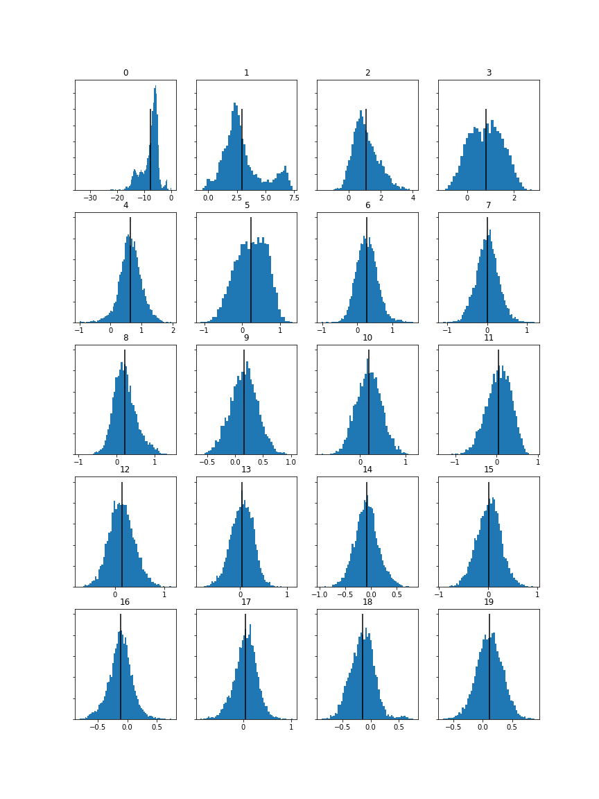 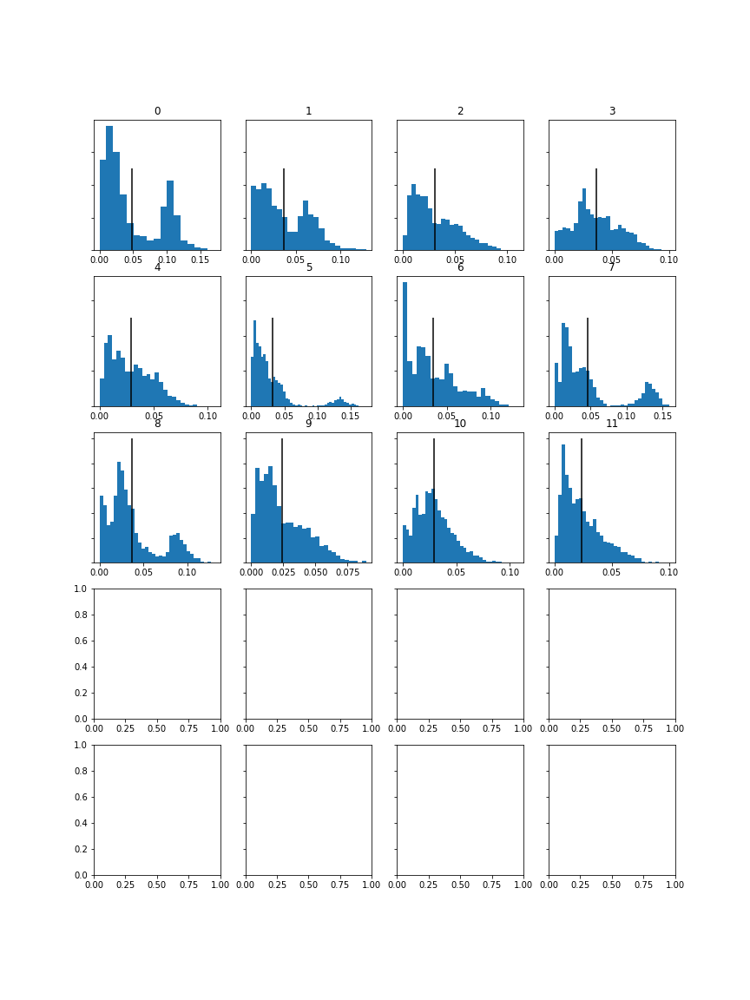

 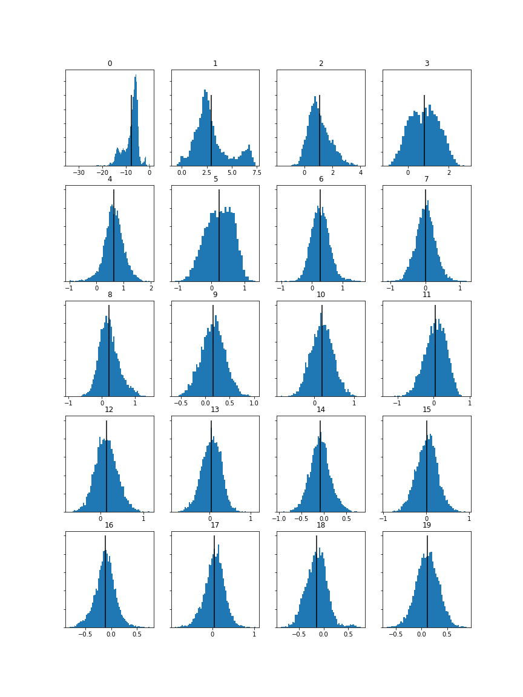
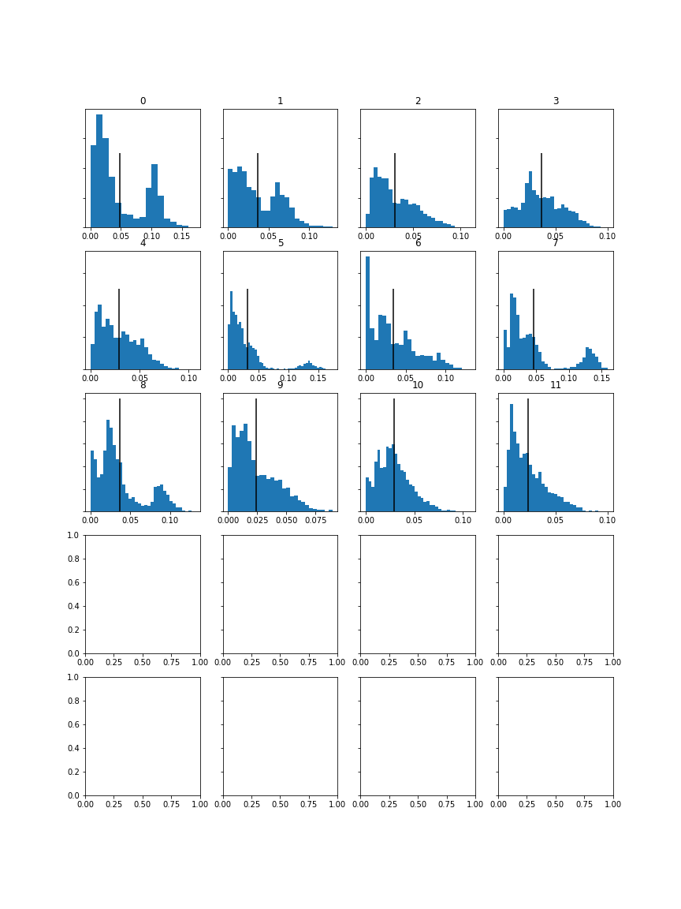
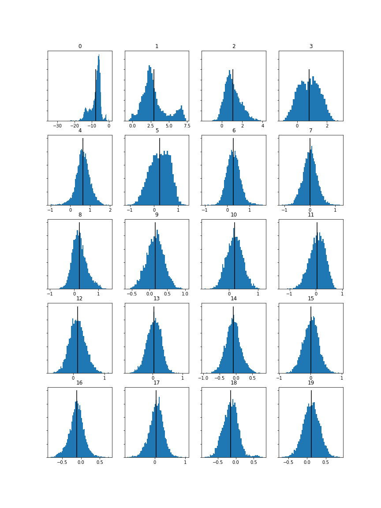
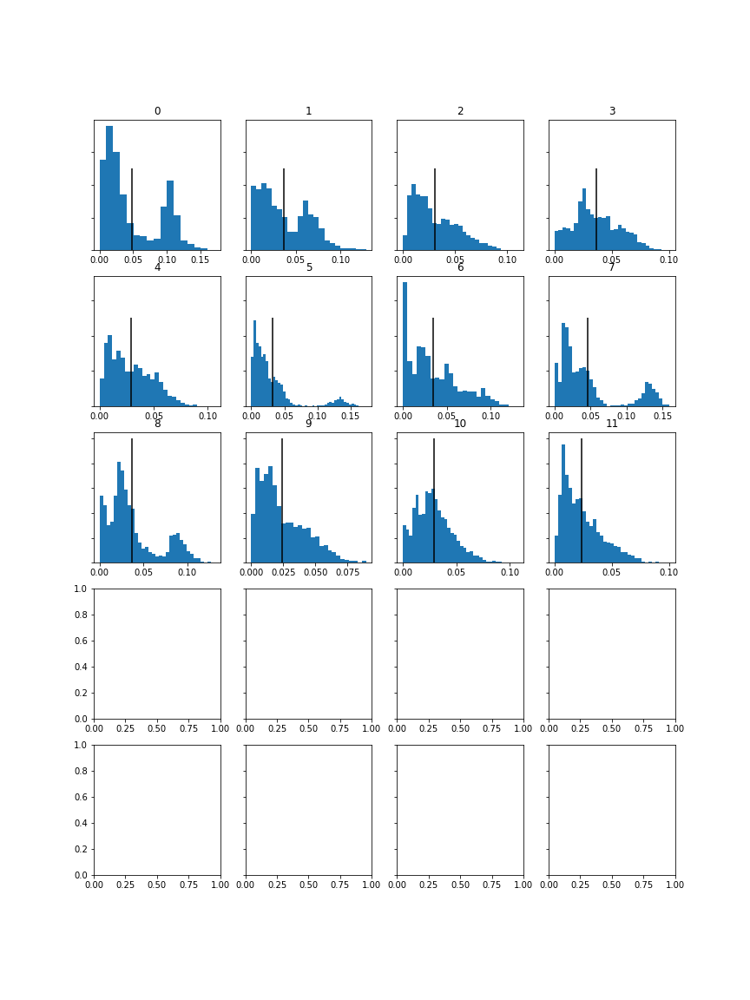